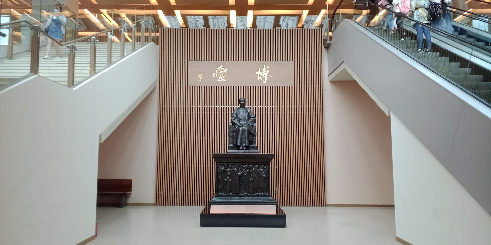

Código de ética
El equipo editorial, los evaluadores seleccionados por este y los autores que postularen artículos para su publicación en Asia/América Latina, aceptan y se comprometen a
respetar y a hacer respetar un código de ética compuesto por los siguientes lineamientos.
El equipo editorial debe:
- Seleccionar los artículos cuya temática ofrezcan una contribución a los objetivos de la revista
- Difundir los artículos publicados en círculos académicos especializados
- Garantizar la revisión anónima de los artículos recibidos
- Seleccionar un equipo de evaluadores estables y especializados
- Preservar el anonimato de los evaluadores particulares de cada artículo durante todo el proceso de revisión ciego por pares
- Actuar en base a la completa responsabilidad y autoridad para aceptar o rechazar artículos, lo cual hará en base al dictamen de los evaluadores expertos en el proceso de evaluación ciego. De ese modo, los editores evitarán el conflicto de intereses.
- Realizar la evaluación en los tiempos solicitados por el equipo editorial
- Exigir que la evaluación sea ciega y confidencial
- Enviar un informe crítico y completo según el formulario ofrecido y que puede ser consultado en la web
- Hacer notar a los autores obras relevantes que aún no han sido citadas
- Someterse al sistema de evaluación por pares
- Presentar trabajos originales que no han sido publicados ni presentados en otros medios con anterioridad
- Dar fe de que el trabajo postulado sea exhaustivo, riguroso, honesto y los resultados de investigación sean ciertos y contrastables
- Ofrecer una declaración de que el artículo está basado en datos reales y auténticos, es original y de su autoría
Para citar los artículos, por favor usar la siguiente fórmula:
Apellido, N., (año), “Título del capítulo”, en Revista Asia/AméricaLatina, Vol(N), pp. XX-XX. DOI: 10.33177/X.X
Detección de plagio
Para la detección de plagio, el equipo editorial de Asia/América Latina hace chequeos en buscadores de la web de párrafos seleccionados aleatoriamente de los artículos postulados. En caso de que se constate una coincidencia de más de diez palabras seguidas con respecto al texto de un texto ya publicado —y considerando que no medie la citación correspondiente—, el equipo editorial se contactará con el/los autor/es para notificarle/s sobre la detección de dicha anomalía, frente a la cual el/los autor/es tiene/n derecho a hacer el descargo correspondiente dentro de las cuarenta y ocho horas corridas de haber sido notificado.
De hallar pertinentes el equipo editorial las razones que el/los autor/es dare/n, se procederá con el proceso de evaluación del artículo descartando la porción de su texto que se hubiere descubierto plagiada. Los evaluadores serán en todo caso alertados del incidente, y serán responsables de constatar que no existan otro tipo de plagios de carácter no textual (teórico, metodológico, bibliográfico, etcétera).
En todo caso en el que la cantidad de palabras seguidas coincidentes fuere mayor a treinta, o en el que existiere más de un pasaje plagiado, el artículo será rechazado, y el/los autor/es vedado/s de la posibilidad de postulación de nuevos artículos por un período no menor a tres años.
Acceso abierto
Asia/América Latina proporciona un acceso abierto a todo su contenido, basado en el principio de que ofrecer al público un acceso libre a las investigaciones ayuda a un mayor intercambio global del conocimiento.
Asia/América Latina permite a los lectores leer, descargar, copiar, distribuir, imprimir, buscar o vincular los textos completos de sus artículos y utilizarlos para cualquier otro propósito legal, sin costo alguno.
Declaración de originalidad y cesión de derechos
El/los autor/es deben en todo caso adjuntar una declaración dando fe de la originalidad de todo el contenido del artículo postulado, así como cediendo los derechos de reproducción y distribución del mismo, en caso de ser publicado, de acuerdo con nuestra política de acceso abierto garantizado por la licencia Attibution 4.0 International de Creative Commons.
Se puede descargar el modelo de dicha declaración AQUÍ
Políticas de preservación digital
La Revista mantiene una política general y exclusiva de permiso de autoarchivo por parte del autor o, en su defecto, de archivo por parte de la institución a la cual este autorice, bajo la licencia Commons 4.0. La versión que se archive debe ser la publicada por la Revista y debe incluir la portada. No existe período de embargo para el archivo.